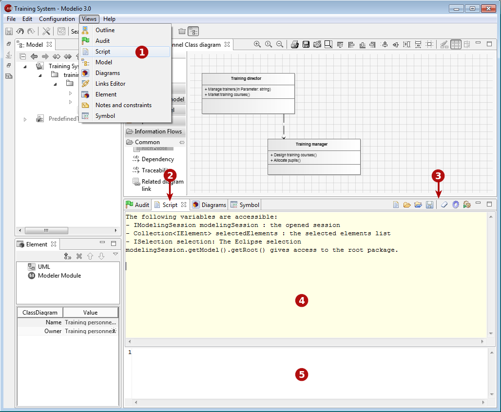
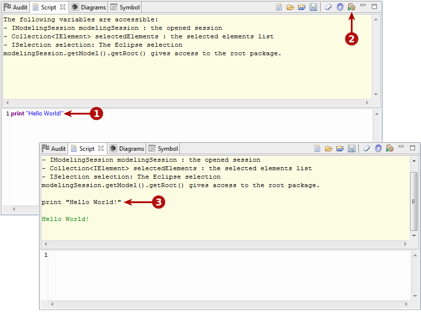
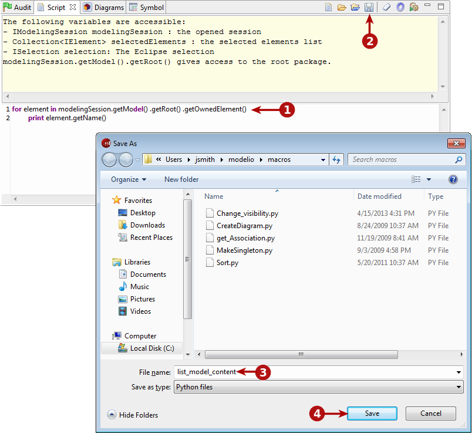

button to execute the script.
button to execute the script.With Modelio, you can run scripts written in Jython:
either from the Modelio command line
or in a dedicated view called the Script view
You can also save these scripts as macros, which you can then use as often as you wish. These macros are defined and organized in a dedicated catalog, and can be run through an associated pop-up menu command, an associated toolbar icon or through the macro window itself. For more information on macros, please see the section on the macros catalog.

Key:
The script view toolbar buttons run the following operations:
: Opens the macro catalog, where scripts which have been saved as macros are presented.
: Loads an existing script.
: Loads an existing script and automatically runs it.
: Saves the script entered in the script input zone in a file.
: Clears the entire contents of the script view output zone.
: Activates the script debug mode. In this mode, the script input zone is not cleared when a script is run.
: Runs the script entered in the script input zone and displays the result in the script display zone. Clears the input view except if the debug mode is active.
Note: Two keyboard shortcuts exist for the script view:
Ctrl+Enter: Runs everything in the script input zone.
Shift+Enter: Runs only what is selected in the script input zone.

Key:
button to execute the script.If you intend to re-use a Jython script, you may want to save it, as shown below.

Key:
 button to save the script in a file.
button to save the script in a file.Note: Scripts which have been saved can be used as macros, available at either project, workspace or application level. For more information, please see the section on the macros catalog.